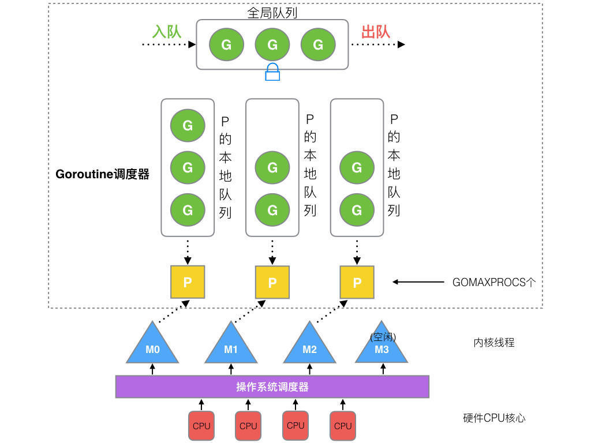

本文基于Golang go1.15.2 darwin/amd64
前言
首先看以下并发和并行概念：
- 并发(concurrent): 逻辑上处理同时的任务的能力
- 并行(parallel): 物理上同一时间处理不同任务
一般来说，并发对应在单个处理器，通过串行的时间片分配（time slice）来执行任务。而并发，对应多个处理器，来执行不同的任务。
Golang中，执行多个任务时，Goroutine会创建不同的线程，也会将任务单元分配给其他线程来执行，这像是并发和并行的结合，能够最大化执行效率。
Go调度器组成
G
G是Goroutine的缩写，相当于操作系统的进程控制块(process control block)。它包含：函数执行的指令和参数，任务对象，线程上下文切换，字段保护，和字段的寄存器。
下面代码来自runtime/runtime2.go,可以看到，每个Goroutine都有一个不导出的goid。
1 | type g struct { |
不同版本的Go语言，Goroutine的栈空间的默认值不一样。下面代码来自runtime/proc.go。
1 | const ( |
M
M是一个线程，每个M都有一个线程的栈。如果没有给线程的栈分配内存，操作系统会给线程的栈分配默认的内存。当线程的栈制定，M.stack->G.stack, M的PC寄存器会执行G提供的函数。
1 | type m struct { |
P
P(处理器，Processor)是一个抽象的概念，不是物理上的CPU。当一个P有任务，需要创建或者唤醒一个系统线程去处理它队列中的任务。
P决定同时执行的任务的数量，GOMAXPROCS限制系统线程执行用户层面的任务的数量。
1 | // GOMAXPROCS sets the maximum number of CPUs that can be executing |
Go调度器的调度过程
首先创建一个G对象，然后G被保存在P的本地队列或者全局队列（global queue）。这时P会唤醒一个M。P按照它的执行顺序继续执行任务。M寻找一个空闲的P，如果找得到，将G移动到它自己。然后M执行一个调度循环：调用G对象->执行->清理线程->继续寻找Goroutine。
在M的执行过程中，上下文切换随时发生。当切换发生，任务的执行现场需要被保护，这样在下一次调度执行可以进行现场恢复。M的栈保存在G对象，只有现场恢复需要的寄存器(SP,PC等)，需要被保存到G对象。
如果G对象还没有被执行，M可以将G重新放到P的调度队列，等待下一次的调度执行。当调度执行时，M可以通过G的vdsoSP, vdsoPC 寄存器进行现场恢复。
- P队列
P有2种类型的队列：
- 本地队列：本地的队列是无锁的，没有数据竞争问题，处理速度比较高。
- 全局队列：是用来平衡不同的P的任务数量，所有的M共享P的全局队列。
- 线程清理
G的调度是为了实现P/M的绑定，所以线程清理就是释放P上的G，让其他的G能够被调度。
主动释放(active release)：典型的例子是，执行G任务时，发生了系统调用(system call)，这时M会处于阻塞（Block）状态。调度器会设置一个超时时间，来释放P。
被动释放(passive release)：如果系统调用发生，监控程序需要扫描处于阻塞状态的P/M。
这时，超时之后，P资源会回收，程序被安排给队列中的其他G任务。
调度示意图

P的数量由GOMAXPROCS环境变量，或者runtime中GOMAXPROCS()函数决定的。
M的数量在runtime/debug包的SetMaxThreads()决定。如果当前的M阻塞，就会新建一个新的线程。
M的数量和P的数量没有关系。如果当前的M阻塞，P的goroutine会运行在其他的M上，或者新建一个M。所以可能出现有很多个M，只有1个P的情况。
调度策略
调度策略是为了尽可能地复用线程，避免频繁地创建，销毁线程。有2中策略：
- Work Stealing: 当没有运行的G时，从其他P的队列上获得G
- Hand Off: 当M阻塞时，将P转移到其他空闲的M。
全局的Goroutine队列，当Work Stealing失败，M可以从这个队列获取G任务。
抢占式调度(Preemptive scheduling)
考虑到有大量的G任务时，为了让每个G任务都有时间运行，runtime.main会创建一个额外的M，来运行sysmon函数。抢占(preemption)在sysmon中实现。
sysmon会进入一个无限循环，第一轮休眠20us，然后休眠时间倍乘，最后每次休眠时间达到10ms。sysmon有netpoll, retake(抢占),forcegc, scavenge heap等其他处理。
1 | // Always runs without a P, so write barriers are not allowed. |
go func(){}之后

go func(){}创建一个新的goroutine- G保存在P的本地队列，如果本地队列满了，保存在全局队列
- G在M上运行，每个M绑定一个P。如果P的本地队列没有G，M会从其他P的本地队列，或者G的全局队列，窃取G
- 当M阻塞时，会将M从P解除。把G运行在其他空闲的M或者创建新的M。
- 当M恢复时，会尝试获得一个空闲的P。如果没有P空闲，M会休眠，G会放到全局队列。
生命周期
M0: M0是首先创建的线程。它就像系统初始化，启动第一个G，然后变成普通的M。
G0: 当M创建时，G0就创建了。G0用来调度其他的G。每个M都有自己的G0。当系统调用或者goroutine调度，G0的内存栈就会被占用。
看下面的例子，
1 | package main |
上面代码的流程图：
- runtime创建M0，G0然后绑定他们
- 调度器初始化：初始化M0，栈，垃圾回收，创建初始的长度为
GOMAXPROCS的P列表 runtime.main创建代码的main.main，创建主gorourine,然后放到P的本地队列- 启动M0, M0绑定P
- 根据goroutine的栈和调度信息，M0设置运行环境
- 在M中运行G
- G退出，
runtime.main调用defer,panic,最后调用runtime.exit
参考链接
- https://www.timqi.com/2020/05/15/how-does-gmp-scheduler-work/
- https://www.programmersought.com/article/98681581962/
我的公众号：lyp_share